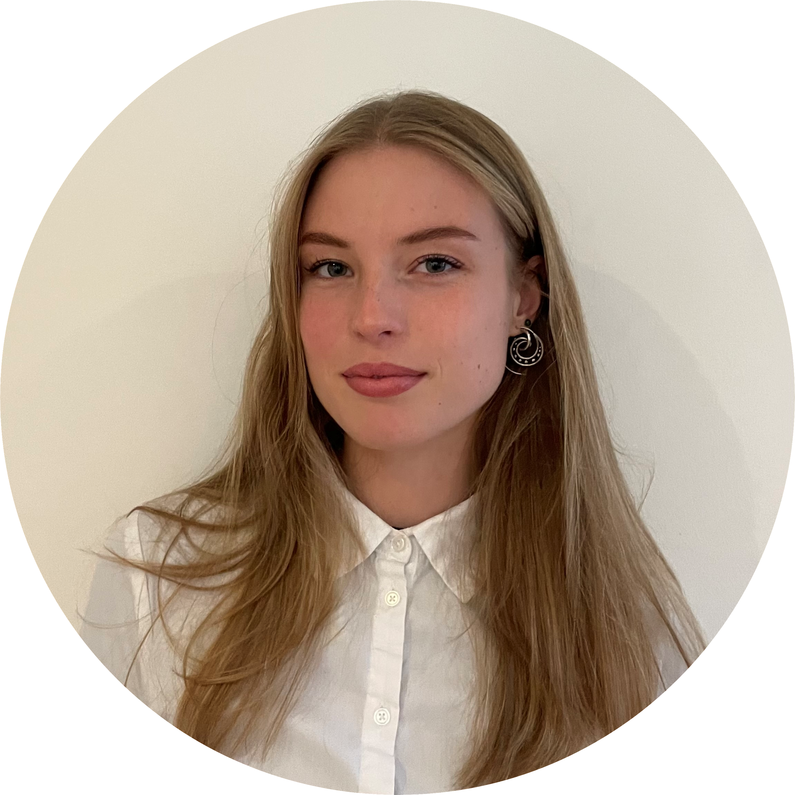
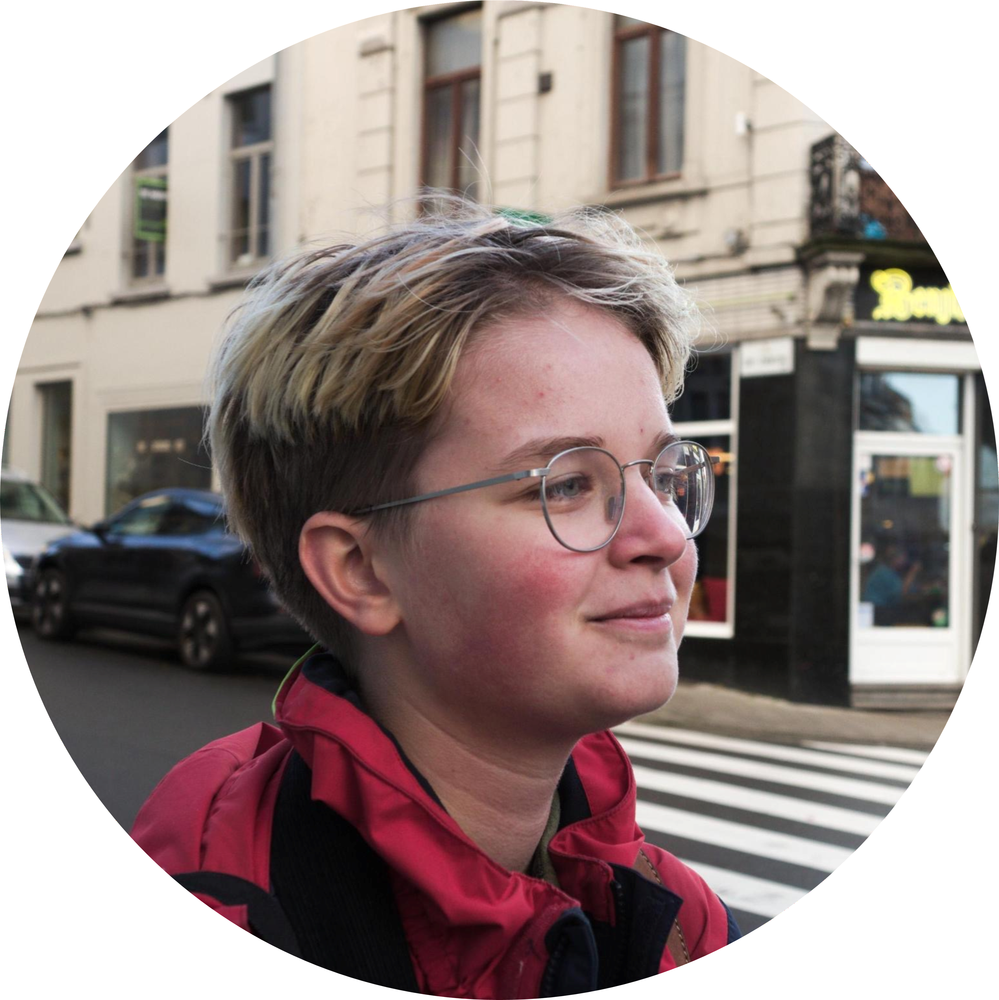
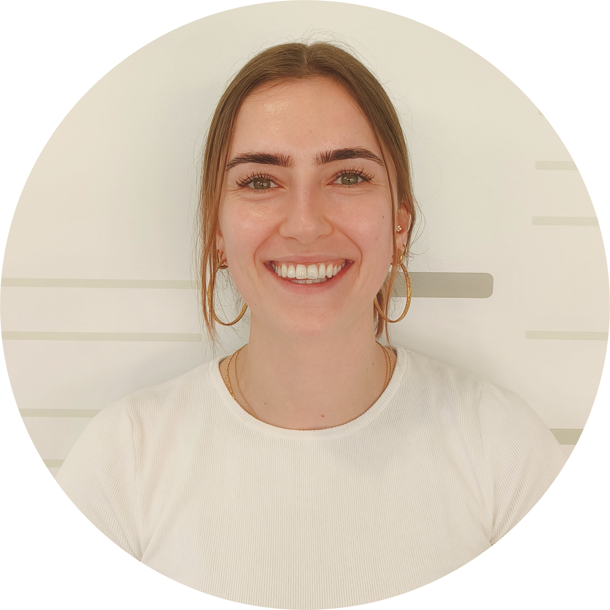
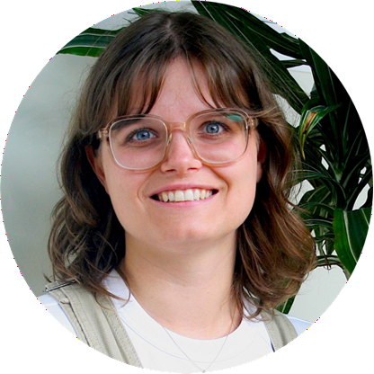
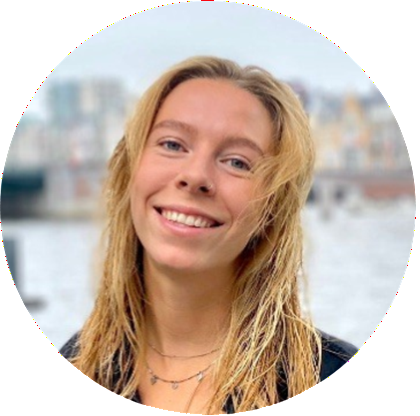

Open Science Guidebook for Neuroscientists Team
Meet the people behind the project!
Web administration
-
Mar Barrantes-Cepas
Amsterdam UMC, The Netherlands -
Eva van Heese
Amsterdam UMC, The Netherlands 
Sanne Korbijn
Amsterdam UMC, The Netherlands-
Tess Molenaar
Amsterdam UMC, The Netherlands 
Rikke Waard
Amsterdam UMC, The Netherlands
Lotte Woltheus
Amsterdam UMC, The Netherlands
Authors & Reviewers
-
Mar Barrantes-Cepas
Amsterdam UMC, The Netherlands -
Eva van Heese
Amsterdam UMC, The Netherlands -
Eduarda Centeno Amsterdam UMC, The Netherlands -
Nadza Dzinalija
Amsterdam UMC, The Netherlands -
Diana Bocancea
Amsterdam UMC, The Netherlands -
Eva Koderman
Amsterdam UMC, The Netherlands -
Meera Chandra
Bordeaux, France -
Sara Said
Amsterdam UMC, The Netherlands 
Mona Zimmerman
Amsterdam UMC, The Netherlands-
Lucas Baudouin
Amsterdam UMC, The Netherlands 
Janneke Lemmerzaal
Amsterdam UMC, The Netherlands-
Sara Carracedo
Bordeaux, France -
Juliette Castelot
Amsterdam UMC, The Netherlands -
Ruxandra Coman
Amsterdam UMC, The Netherlands -
Alexander Bijnsdrop
Amsterdam UMC, The Netherlands -
Bernardo Maciel
VU, The Netherlands -
Tomas Garnier
Bordeaux, France -
Juan García Ruiz
Bordeaux, France -
Niels Reijner
Amsterdam UMC, The Netherlands
Senior Reviewers
-
Linda Douw
Amsterdam UMC, The Netherlands -
Laura Jonkman
Amsterdam UMC, The Netherlands -
Dorien Maas
Amsterdam UMC, The Netherlands -
Tommy Pattij
Amsterdam UMC, The Netherlands -
Geert Schenk
Amsterdam UMC, The Netherlands -
Menno Schoonheim
Amsterdam UMC, The Netherlands -
Chris Vriend
Amsterdam UMC, The Netherlands